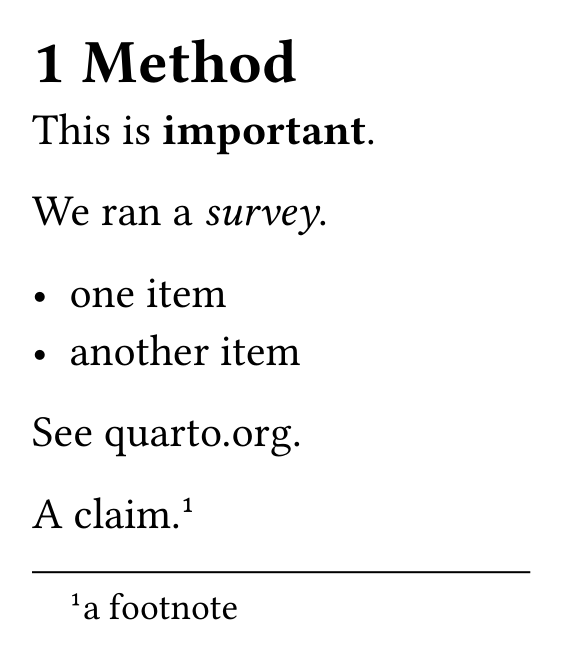
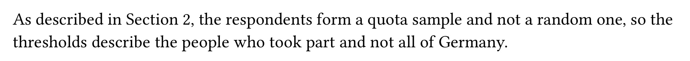
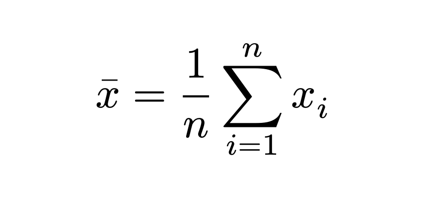
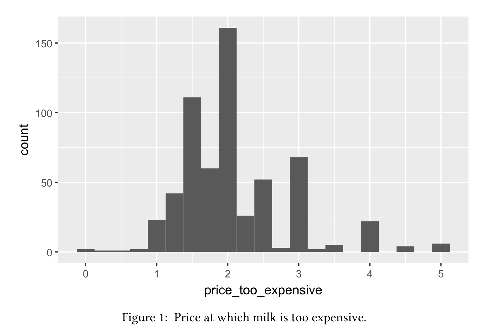
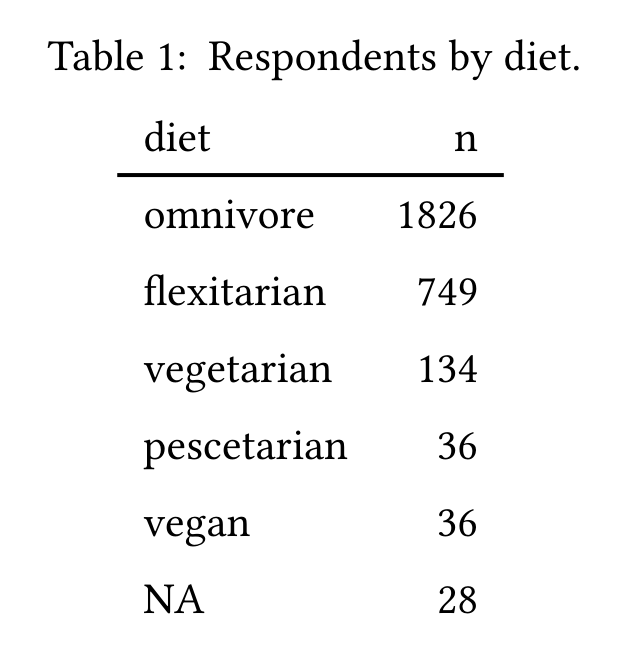
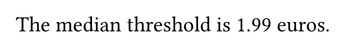
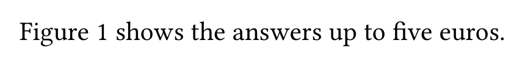
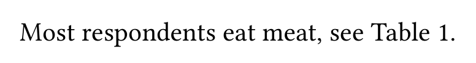

the document is the analysis, so a number in the text can only be wrong if the code is wrong.



| option | code shown | runs | result shown |
|---|---|---|---|
| echo: false | no | yes | yes |
| include: false | no | yes | no |
| eval: false | yes | no | no |
| warning: false | yes | yes | yes, without warnings |
| message: false | yes | yes | yes, without messages |




